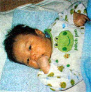
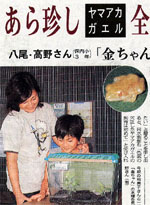
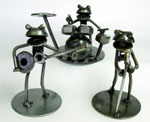
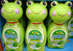

カエル服でケロケロ育て！ 【げこげこ大王直筆】某地元新聞に掲載されていたカエル服に身をつつんだ偉大な赤ちゃんは、きっとすくすくすくすくと立派なカエルに育つであろうぞ。
赤ちゃん本舗などの店にでかけると、カエルグッズの洪水だ。服から温度計、遊び道具にいたるまで、すべてをカエルでそろえた母がいたら、投稿してくれえええ。
福井県下で黄金カエルがザクザク発見！ 【富山発延喜式内杉原神社祢宜杉原秀圭同志記者】 毎度、北日本新聞愛読者の延喜式内杉原神社禰宜でございます。先日も北日本新聞のカエル記事の切り抜きをお送りさせていただきましたが、あれから数日後、今度は黄（金）色カエルのアカガエルバージョンが登場してしまいました(T-T)。記事によりますとアカガエルのアルビノの発見例は少ないとのことで、福井県の水族館へ贈られることになったとのこと。偶然、この福井の水族館へ今夏行ってきたところだったのですが、確かに「カエルコーナー」が新設されておりました。
ちなみに発見者は私の住んでいる村のとなり村の少女です。八尾町民は（私を含め）富山県でも特にカエルを大切にする町民なのでしょう。黄色アカガエル５匹のうち２匹は記事の通り福井の越前松島水族館へ贈られ、現在展示されていると、今日、北日本放送（ラジオ）で放送されました。
添付の記事と照らし合わせてご覧いただくといっそう楽しめます。
【全国かえる奉賛会】北日本新聞の偉大なカエル路線は、厳然と守られていて素晴らしい！題字のとなりにカエルマークをいれてほしいぞお。信頼性も増すというものであるう。
 メタル系カエルバント出現！【福島発ゴールデンバンデッドリリー同志記者】 突然このようなメールをお送りいたします失礼をお許しください今回お送りいたします映像ですが鉄製のカエルです、廃材を利用して作りました、この商品以外にも御座いますのでＨＰをご覧下さい
【全国かえる奉賛会】素晴らしい作品である。メタル系バンドは大王も大好きなので、だれか、このバンドのために作曲してやってくれー。
カエルですっきり消臭元！ 【日本発あっこ同志記者】意外なカエルグッズを発見しましたのでメール致しました。ホームセンターの消臭剤コーナーで小林製薬のトイレ消臭剤「消臭元」の新製品が並んでいました。 商品名は「トイレのアニマル消臭元」希望小売価格400円(税込) ボトルのデザインがカエル、ウサギ、キリンの3種類がありとっても可愛いんです！あまり長居したくないトイレもこのカエルがいればウッキウキ〜♪ 可愛いばかりじゃなく400mLと大容量なので悪臭をどんどん消してくれそうです。 関連URL=http://www.kobayashi.co.jp/seihin/asg/index.html
@ @ +--+--+--+--+--+--+--+--+--
(----) あっこ同志記者
m< >m 直筆署名
d b +--+--+--+--+--+--+--+--+--
【神奈川発ケロコ同志記者】こんにちは神奈川のケロコです。トイレの消臭元にアニマル消臭元カエルが登場、香りはスクイズライム!早速いい香りになったよ!【全国かえる奉賛会】うーむ全国のトイレに配備しようではないかあ。会社では必需品にしよう。 胸に「カエル」でワンポイントリハビリ！【日本発keromura同志記者】たまたまＮＨＫ教育テレビをつけたところ、画面に目がくぎ付けになりました。その番組は「ワンポイントリハビリ」。講師の先生とモデルの人たち・・・とかではなくて、着ている黄色いポロシャツにです。胸に「カエル」のマークが。 ストレッチで若返る・カエルにかけているのでしょうか？ 公式ページ＝http://www.nhk.or.jp/fukushi/one_reha/ カエル新聞縮刷版は年内に発行へ！朝日新聞縮刷版とともに、図書館に並ぶ日も近いであろう。年内発行だからなー。みんな、これまで以上に「かえる新聞」での報告をまっていてくれえええ。 ところで、縮刷版は、過去の全部の新聞を収録したいところぢゃが、収録件数の制限があって、全部とはゆかないのぢゃ。大王が選択するので、まかせてほしいのだが、もしも、投稿したねたが、縮刷版に収録するのは、ちょっとなーと思っている人は、早めに教えてほしい。大王あてメール→大王様へのメールwakuro-3@hf.rim.or.jp
収録からはずすこともできます。 福岡かえる展７を来年開催決定！ 【福岡かえる展７実行委員会】来年も福岡かえる展７を開催することに決定しました。その前に来年２月には、第２回冬のお絵書き展をするんだけどね。
【福岡かえる展７実行委員会】来年も福岡かえる展７を開催することに決定しました。その前に来年２月には、第２回冬のお絵書き展をするんだけどね。今回は、大王がなにかとあわただしいため、大王代行＝執権＝北条けおさんの指導のもと、Ｅ３さんが３期連続の実行委員長として、楽しい企画を展開してくれるぞおおお。 楽しみにしていてくれええええ。 携帯で携帯＠カエル新聞を吸い取ろう！ 【全国かえる奉賛会】携帯から初めてカエル新聞を見たいというひとにとっては、アドレスを打つのが難儀なものよのう！そこでドコモとボーダフォンの一部機種から、カメラをかざしてコードを読みとるんぢゃああ。なお、このQRコードを眺めていたらカエルやらオタマジャクシやらが浮かび上がってくるらしいぞおお。ほんとかああ。
【全国かえる奉賛会】携帯から初めてカエル新聞を見たいというひとにとっては、アドレスを打つのが難儀なものよのう！そこでドコモとボーダフォンの一部機種から、カメラをかざしてコードを読みとるんぢゃああ。なお、このQRコードを眺めていたらカエルやらオタマジャクシやらが浮かび上がってくるらしいぞおお。ほんとかああ。
|
メールマガジン登録
メールマガジン解除
Powered by


かえる古新聞過去に取り上げた記事を見出し付きで一覧したい人は、ここをクリック◆創刊号を見る◆先週号を見る◆話題の号を見る◆かえる新聞の昔を読む
|
私も入っています。。全国かえる奉賛会
大王様に会うには、このバナーをクリック。ずっと奥に写真館があるぞ。全国かえる奉賛会に入会するには、自分のホームページのどこかに、下の部分を追加するとバナーがリンク付きで表示されるぞ。どんどん入会しましょー |


|